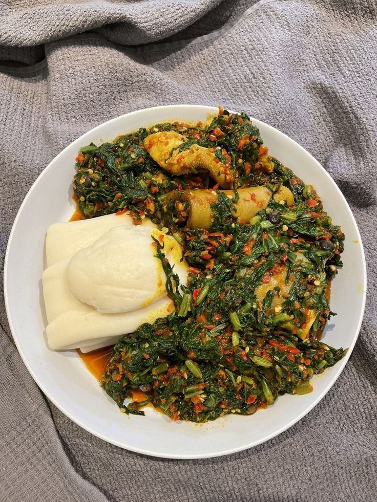

Swallow and Vegetable Soup is a traditional Nigerian meal made with soft swallow and rich vegetable soup. The soup contains fresh leafy vegetables, peppers, seasonings and protein.
It is freshly prepared and served as a delicious and filling traditional meal. It is suitable for lunch and dinner and can be enjoyed by the whole family.
| Specification | Details |
|---|---|
| Swallow | Nigerian Swallow |
| Soup | Vegetable Soup |
| Ingredients | Fresh Vegetables, Pepper and Protein |
| Preparation | Freshly Prepared |
Price: N5,000
Back to Home